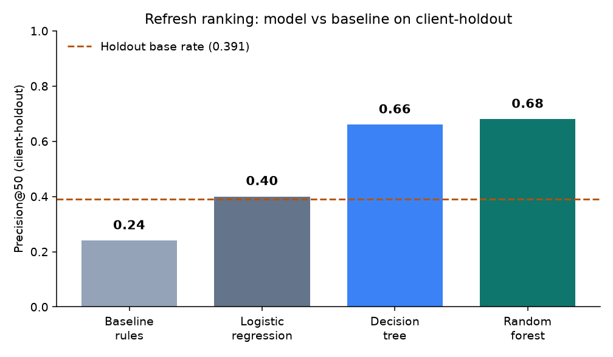
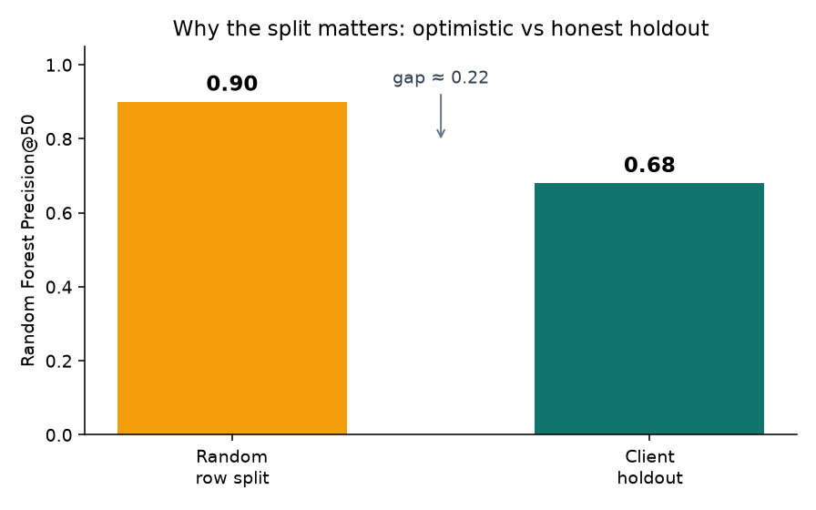
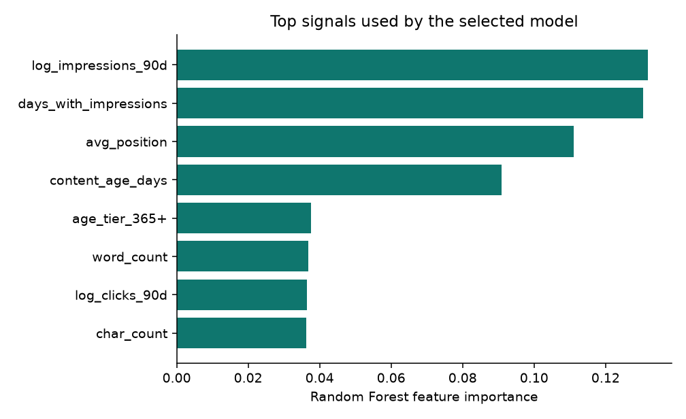
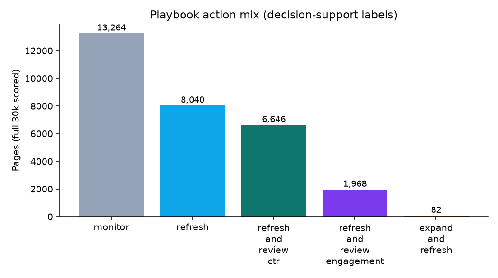

FlyRank ML Internship · ML-CAP-01 · Capstone Paper
Ranking Pages for Refresh Review: A Client-Holdout Decision-Support Model
observed · measured · directional · decision-support (not causal)Abstract
Which existing pages should a content reviewer open first when organic demand is slipping? Using FlyRank’s anonymized content-refresh starter set (30,000 pages × 44 columns), we frame a ranking task whose proxy label is is_declining_label = (trend_direction == "down"). A transparent hand-rule baseline reaches Precision@50 = 0.240 on a client-holdout split; a Random Forest trained without label-derived leak features reaches Precision@50 = 0.680 (~2.8× the baseline; holdout base rate 0.391). The output is a decision-support queue with reason codes and suggested actions — not a causal claim about SEO interventions.
1. Introduction / Problem
Content teams cannot re-audit every URL every week. The practical decision is ranked triage: given limited editor time, which pages are most worth a human refresh review right now?
The unit of analysis is a page. The system outputs a score, a suggested action (monitor / refresh / refresh_and_review_ctr / …), a confidence band, and reason codes. A wrong high rank wastes editor time; a missed declining high-demand page leaves recoverable traffic on the table. ML earns its keep when a transparent rule undershoots and a validated ranker concentrates true decline proxies at the top of the queue — on a split that does not leak client identity across train and test.
2. Data
| Item | Detail |
|---|---|
| Source | FlyRank ML Internship anonymized starter (data/raw/content_refresh_anonymized.csv) |
| Size | 30,000 pages × 44 public-safe columns |
| Label | is_declining_label = (trend_direction == "down") · full-set base rate ≈ 0.542 |
| Excluded from features | trend_direction, trend_pct, client-/URL-/query-identifying fields |
| Public safety | No private names, raw queries, or client-identifying detail in this page |
Metric receipts (committed): work/outputs/model_holdout_metrics.json, validation_audit_metrics.json, baseline_action_score_metrics.json, action_playbook_metrics.json.
3. Methodology
3.1 Assumptions
This is a cross-sectional snapshot. The decline label is a proxy for refresh worthiness, not ground-truth editor judgment. Rankings support human review; they do not auto-publish and they do not prove that refreshing causes recovery.
3.2 Baseline (ML-07)
Transparent weighted hand score: 0.4·visibility + 0.3·freshness_risk + 0.25·position_opportunity + 0.05·depth_gap. On the same client-holdout used later for models: Precision@50 = 0.240 (Prec@20 = 0.150).
3.3 Models (ML-08)
Logistic regression, decision tree, and Random Forest on 52 engineered features (random_state=42). Client-holdout: 6 held-out clients · 27,675 train / 2,325 test rows · holdout base rate 0.391.
3.4 Leakage & validation (ML-09)
Forbidden overlap with label-derived fields is empty in the feature list. Deliberately injecting trend_pct (or last/prev 30d leak proxies) collapses Prec@50 to 1.0 — a red-team that shows why those columns stay out. A random row split reports RF Prec@50 = 0.90 versus client-holdout 0.68 (gap ≈ 0.22). The honest public number is the grouped split.
3.5 Playbook blend (ML-10)
Final queue score ≈ 0.7·model_probability + 0.3·baseline_normalized, plus reason codes and human-review gates before any rewrite.
4. Results
4.1 Model vs baseline (same client-holdout)
| Method | Prec@20 | Prec@50 | Avg prec. | ROC AUC |
|---|---|---|---|---|
| Baseline rules | 0.150 | 0.240 | — | — |
| Logistic regression | 0.350 | 0.400 | 0.522 | 0.700 |
| Decision tree | 0.650 | 0.660 | 0.575 | 0.742 |
| Random Forest (selected) | 0.700 | 0.680 | 0.610 | 0.747 |
Holdout top-50 proxy positives: 34 / 50. Headline lift: 0.240 → 0.680 (≈2.8×) at K=50, above the holdout base rate of 0.391.

4.2 Why the split matters

4.3 What the model leans on

4.4 Playbook action mix

monitor (13,264). Refresh and CTR-review actions concentrate editor effort where the blend and reason codes agree.Confidence mix on the full 30k: low 15,000 · medium 11,368 · high 3,632. Dominant reason codes include declining_with_demand, visible_model_opportunity, low_ctr_visible_page, and model_decline_risk.
5. Limitations & honest framing
- Proxy label.
trend_direction == "down"is not editor intent; disagreement with human judgment is expected. - Single snapshot / starter sample. Results describe this anonymized portfolio, not all sites.
- Client holdout ≠ sealed future month. Grouping blocks identity leakage; it is not full time-travel validation.
- Base rate context. Prec@50 = 0.68 must sit next to holdout base rate 0.391 and baseline 0.240.
6. Ranked recommendations
- Open the top of the blended queue first (see
work/outputs/action_playbook_top20.mdin the repo). - Treat high-confidence
refresh_and_review_ctrrows as “verify live CTR/snippet before rewriting,” not auto-publish. - Keep
monitoras the default mass action — most pages should not enter a rewrite sprint. - Pause or retrain if Prec@50 drifts toward baseline/base rate, or if editor reject-rate spikes.
- Never ship causal SEO language from these numbers.
7. Reproducibility
python -m venv .venv && source .venv/bin/activate pip install -r requirements.txt python scripts/run_all.py # Lane receipts: work/outputs/*.json (random_state=42, sklearn 1.9.1)
Prior-week notebooks: w04_baseline_score.ipynb, w05_model.ipynb, w06_validation_audit.ipynb, w07_action_playbook.ipynb. Markdown twin of this page: work/reports/ml11_ship_the_paper.md.
Acknowledgments & data credit
Built on the FlyRank ML Internship dataset — https://flyrank.ai. The reference pipeline and anonymized starter ship with the public internship repository. This page mirrors the lane receipts and the filled capstone notebook (work/notebooks/capstone.ipynb) plus work/capstone_report.md.